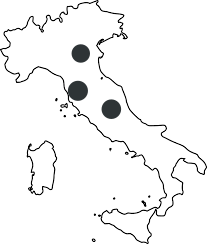
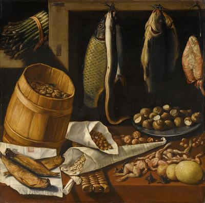

Ricerca per luogo di conservazione


Descrizione
Sullo sfondo della composizione, a uno schermo di assi di legno, sono sospese diverse specie di pesci, tra cui un'anguilla e una carpa, con accanto un fascio di asparagi sul lato sinistro. Su un tavolo in primo piano sono disposte altri viveri: a destra un piatto di lumache, davanti al quale vi sono rane spellate; al centro dominano due sacchetti di carta contenenti nocciole e pignoli. Nell'angolo in basso a sinistra possiamo vedere tre aringhe essiccate su un pezzo di carta, e sopra di esse c'è una piccola botte di legno contenente dei fichi.